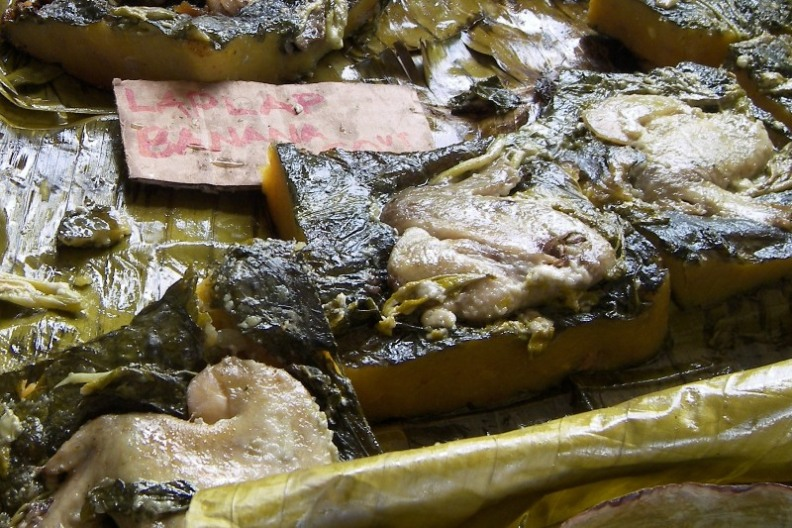

Laplap Banana Recipe

The laplap is the national and special dish is one of the traditional dishes in Vanuatu.
The name came from a local dialect that was commonly used by our ancestors long ago.
Not all traditional friendly to people especially kids because of their taste however,
with this special dish, it is always served with Tin fish which makes the taste delicious.
Ingredients
- Banana
- Chicken
- Coconut cream
- Island Cabbage
- Onion
Instructions
- Wash all the ingredients
- Grade the Banana
- Grade the Coconut if you do not have the cream available in Can
- Prepare the island cabbage leaves by flattening them to soften
- flatten and spread out the graded banana
- Once all that is ready, you can put them all in an oven or traditional pudding
- Pour the coconut cream on top of the laplap
- Cover it and wait for it to bake